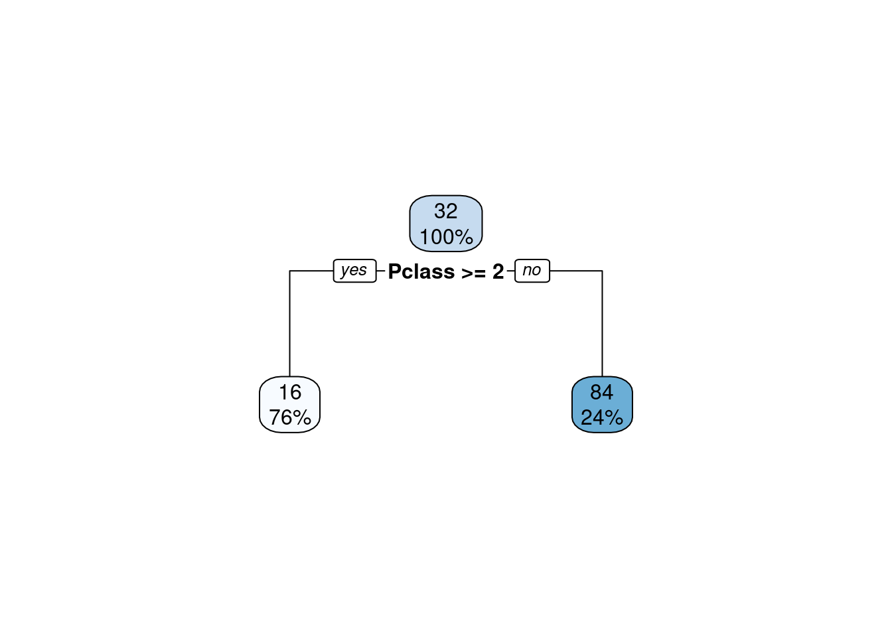
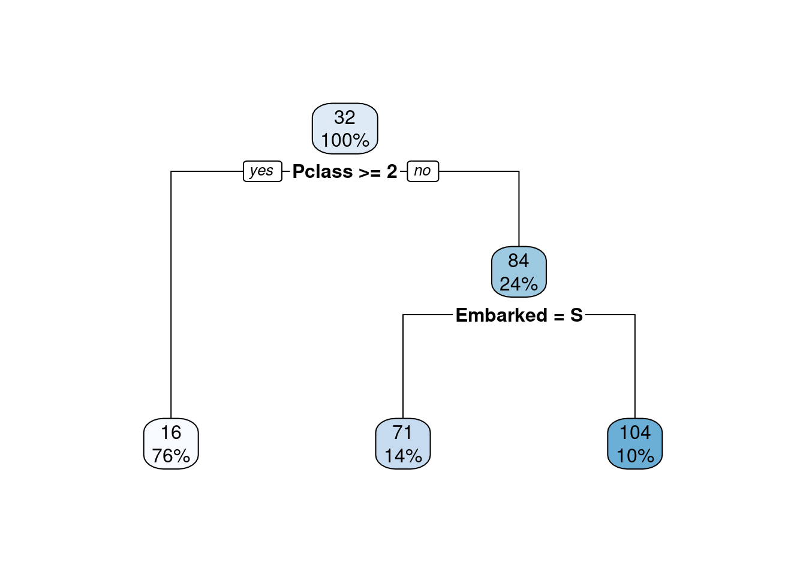
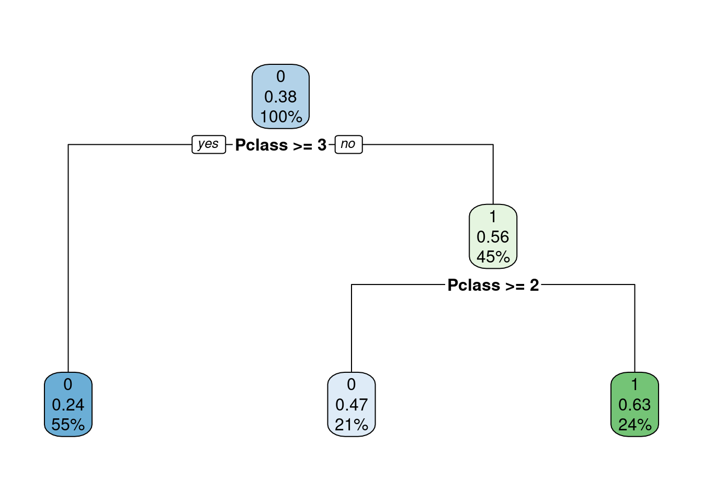
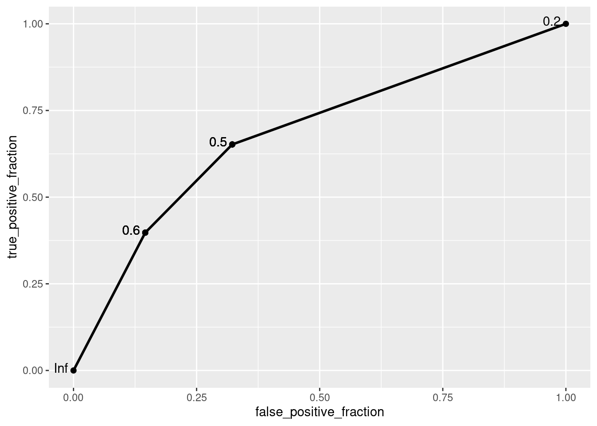
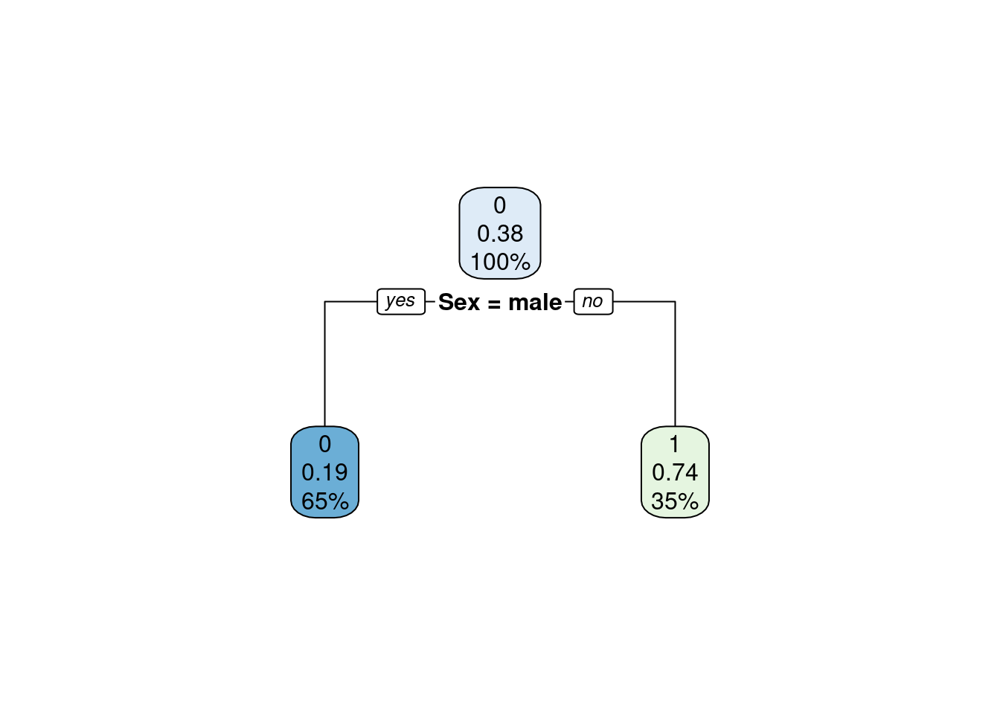
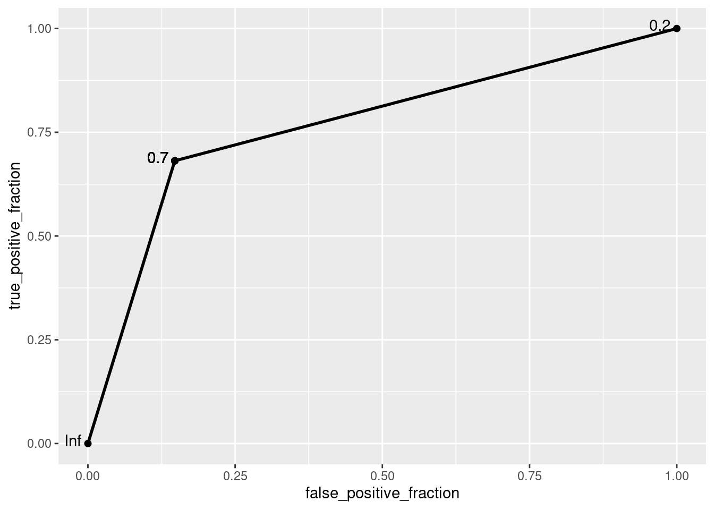

Other Models
Learning objectives
- Understand the structure and intuition of decision trees.
- Build decision tree models for a numeric outcome or a categorical outcome.
- Evaluate model performance using appropriate metrics.
We will use many packages today! First, install rpart and rpart.plot:
Then load the packages:
We will explore a new dataset, titanic_dataset, which contains information about passengers of the Titanic, that sank on 15 April 1912 after colliding with an iceberg.

# Upload the data from GitHub
titanic_dataset <- read_csv("https://raw.githubusercontent.com/laylaguyot/datasets/main//titanic_dataset.csv")
# Take a quick look
head(titanic_dataset)Here are some details about how some of the variables were coded:
if a passenger
Survivedthe sinking (Yes =1, No =0)the passenger class,
Pclass(First Class =1, Second Class =2, Third Class =3)the number of siblings or spouses,
SibSp, that a passenger had on board and the number of parents or children,Parch, the passenger had on boardthe port of embarkation for the passenger,
Embarked(Cherbourg =C, Queenstown =Q, Southampton =S).
If we wanted to predict the value of the fare that a passenger paid for the trip based on some predictors, which variable would be the outcome? Which modeling approach would be more appropriate: regression or classification?
The outcome would be Fare which is a numeric variable so regression is more appropriate.
If we wanted to predict if a passenger survived or not, which variable would be the outcome? Which modeling approach would be more appropriate: regression or classification?
The outcome would be Survived which is a categorical variable so classification is more appropriate.*
Which variables in the titanic_dataset would not be appropriate to include in the models described above?
Any variable that is too specific to a passenger: PassengerId, Name, Ticket, or Cabin.
Let’s consider the algorithm of the decision tree. This model comes up with some rules to split our data into subsets.
1. Decision trees for a numeric outcome
For a numeric outcome, the prediction is done according to the average outcome among the subset.
a. Fitting a model
We can use the function rpart(outcome ~ predictor, data = ...) from the `rpart`` package to fit this model:
b. Visualizing the model
We can visualize our tree with its corresponding rules with the function rpart.plot:

Try it! To make sense of the decision tree above, 1) calculate the mean Fare across all classes, 2) calculate the mean Fare in each class, 3) find the percentage of passengers in each class.
# The mean `Fare` is the number shown before the rule is applied
titanic_dataset |> summarize(mean(Fare))
# The mean `Fare` per subset is the number shown after the rule is applied
titanic_dataset |>
group_by(Pclass) |>
summarize(mean = mean(Fare), n = n()) |>
mutate(percent = n/sum(n))The tree made a rule: compare the fare paid in 1st class versus 2nd/3rd class. The predicted value for the Fare is $16 if a passenger was in 2nd/3rd class while it is $84 if the passenger was in 1st class.
c. Making predictions
Let’s use the model to find the average fare for a passenger based on their class with the predict(model, data) function:
# Find the average fare for each subgroup
titanic_dataset |>
mutate(predicted = predict(fit_tree_reg))Note that we only have two possible predicted values since we only have two subsets (1st class vs 2nd/3rd class).
d. Evaluating performance
Let’s evaluate the performance of this model with RMSE:
# Evaluate performance with RMSE
sqrt(mean((titanic_dataset$Fare - predict(fit_tree_reg, titanic_dataset))^2))## [1] 40.03789The decision tree model has a typical prediction error of approximately $40.
Try it! Add another predictor to predict the Fare using a decision tree model. Does the performance of the model improve?
# Fit another decision tree model
fit_tree_reg <- rpart(Fare ~ Pclass + Embarked, data = titanic_dataset)
# Visualize the decision tree
rpart.plot(fit_tree_reg)
# Evaluate performance with RMSE
sqrt(mean((titanic_dataset$Fare - predict(fit_tree_reg, titanic_dataset))^2))## [1] 39.19377The performance has slightly improved with a lower RMSE.
2. Decision trees for a categorical outcome
For a categorical outcome, the prediction is done according to the majority outcome among the subsets.
a. Fitting a model
We can still use the function rpart(outcome ~ predictor, data = ...) by adding method = "class":
b. Visualizing the model
We can visualize our tree with its corresponding rules with the function rpart.plot:

Try it! To make sense of the decision tree above, 1) calculate the proportion of passengers who survived across all classes, 2) the proportion of passengers who survived in each class.
# The proportion of `Survived` is the number shown before the rules are applied
titanic_dataset |> summarize(mean(Survived))
# The propotion of `Survived` is the number shown after the rules are applied
titanic_dataset |>
group_by(Pclass) |>
summarize(percent_survived = mean(Survived), nb_passengers = n()) |>
mutate(percent_class = nb_passengers/sum(nb_passengers))The tree made two rules: compare the survival of passengers in 3rd class versus 1st/2nd class then compare the survival of passengers in 2nd class versus 1st class. The proportion of survival was predicted to be 63% on 1st class, 47% in 2nd class, and 24% in 3rd class. The percentage under represents the amount of data: 24% of the passengers were in 1st class, 21% in 2nd class, 55% in 3rd class.
c. Making predictions
We can use the model to find the probability of a passenger to have survived based on their class with the predict(model, data) function:
## 0 1
## 1 0.7576375 0.2423625
## 2 0.3703704 0.6296296
## 3 0.7576375 0.2423625
## 4 0.3703704 0.6296296
## 5 0.7576375 0.2423625
## 6 0.7576375 0.2423625
## 7 0.3703704 0.6296296
## 8 0.7576375 0.2423625
## 9 0.7576375 0.2423625
## 10 0.5271739 0.4728261
## 11 0.7576375 0.2423625
## 12 0.3703704 0.6296296
## 13 0.7576375 0.2423625
## 14 0.7576375 0.2423625
## 15 0.7576375 0.2423625
## 16 0.5271739 0.4728261
## 17 0.7576375 0.2423625
## 18 0.5271739 0.4728261
## 19 0.7576375 0.2423625
## 20 0.7576375 0.2423625
## 21 0.5271739 0.4728261
## 22 0.5271739 0.4728261
## 23 0.7576375 0.2423625
## 24 0.3703704 0.6296296
## 25 0.7576375 0.2423625
## [ reached getOption("max.print") -- omitted 866 rows ]The output shows two columns. Indeed, the predict() function provides the proportions of each “outcome” in each subset. In our context, we are interested in the second column which indicates the probability of surviving: the predictions can be calculated with predict(model, data)[ ,2].
d. Evaluating performance
We can evaluate the performance of this model by visualizing the ROC curve:
# ROC curve
ROC <- ggplot(titanic_dataset) +
geom_roc(aes(
# Outcome is Survived
d = Survived,
# Probability of surviving based on the decision tree model
m = predict(fit_tree_class, titanic_dataset)[ ,2]))
ROC
And report the AUC:
## [1] 0.681417This model is not great…
Try it! Add another predictor to predict if a passenger Survived using a decision tree model. Does the performance of the model improve?
# Fit another decision tree model
fit_tree_class <- rpart(Survived ~ Pclass + Sex,
data = titanic_dataset,
method = "class")
# Visualize the decision tree
rpart.plot(fit_tree_class)
# ROC curve
ROC <- ggplot(titanic_dataset) +
geom_roc(aes(
# Outcome is Survived
d = Survived,
# Probability of surviving based on the decision tree model
m = predict(fit_tree_class, titanic_dataset)[ ,2]))
ROC
## [1] 0.7668728The performance has improved with a higher AUC value!
e. Predicting more than 2 outcomes
Decision trees can predict more than two outcomes. For example, instead of predicting binary outcomes (such as Survived or not), we might predict a categorical variable with more than two classes. Let’s consider predicting the passenger class (Pclass), which has three possible outcomes (1st class, 2nd class, and 3rd class) based on the Fare paid by a passenger.
# Fit another decision tree model
fit_tree_class <- rpart(Pclass ~ Fare,
data = titanic_dataset,
method = "class")
# Visualize the decision tree
rpart.plot(fit_tree_class)
After fitting the model, we can check the predicted probabilities for each class. By default, predict() gives the probabilities for each class:
## 1 2 3
## 1 0.01769912 0.01769912 0.9646018
## 2 0.70588235 0.11418685 0.1799308
## 3 0.01769912 0.01769912 0.9646018
## 4 0.70588235 0.11418685 0.1799308
## 5 0.01769912 0.01769912 0.9646018
## 6 0.01769912 0.01769912 0.9646018
## 7 0.70588235 0.11418685 0.1799308
## 8 0.00000000 0.19354839 0.8064516
## 9 0.00000000 0.87755102 0.1224490
## 10 0.70588235 0.11418685 0.1799308
## 11 0.00000000 0.19354839 0.8064516
## 12 0.70588235 0.11418685 0.1799308
## 13 0.01769912 0.01769912 0.9646018
## 14 0.70588235 0.11418685 0.1799308
## 15 0.01769912 0.01769912 0.9646018
## 16 0.00000000 0.19354839 0.8064516
## [ reached getOption("max.print") -- omitted 875 rows ]We can also find the most likely class for each passenger based on the probabilities by using the type = "class" option in the predict() function:
# Determine which class is more likely for each passenger
predict(fit_tree_class, titanic_dataset, type = "class")## 1 2 3 4 5 6 7 8 9 10 11 12 13 14 15 16 17 18 19 20 21 22
## 3 1 3 1 3 3 1 3 2 1 3 1 3 1 3 3 1 2 3 3 2 2
## 23 24 25 26 27 28 29 30 31 32 33 34 35 36 37 38 39 40 41 42 43 44
## 3 1 3 1 3 1 3 3 1 1 3 2 1 1 3 3 3 2 3 3 3 1
## 45 46 47 48 49 50
## 3 3 3 3 3 3
## [ reached getOption("max.print") -- omitted 841 entries ]
## Levels: 1 2 3Since we are not just dealing with positive/negative cases, the ROC curve and AUC values cannot be used here. But we can report the accuracy: the proportion of cases that were truly predicted in each class:
# Adding predicted class
titanic_pred <- titanic_dataset |>
mutate(predicted = predict(fit_tree_class, titanic_dataset, type = "class"))
# Confusion matrix
table(Pclass = titanic_pred$Pclass, predicted = titanic_pred$predicted) |>
# Add total cases for rows and columns
addmargins()## predicted
## Pclass 1 2 3 Sum
## 1 204 6 6 216
## 2 33 121 30 184
## 3 52 12 427 491
## Sum 289 139 463 891## [1] 0.8439955The model is producing a relatively high accuracy!
Recommended Resources
- Worksheet keys are posted at the end of the week on Canvas under Programming Tools.
- Recommended readings for other models in Examples of algorithms
- R documentation for rpart and rpart.plot